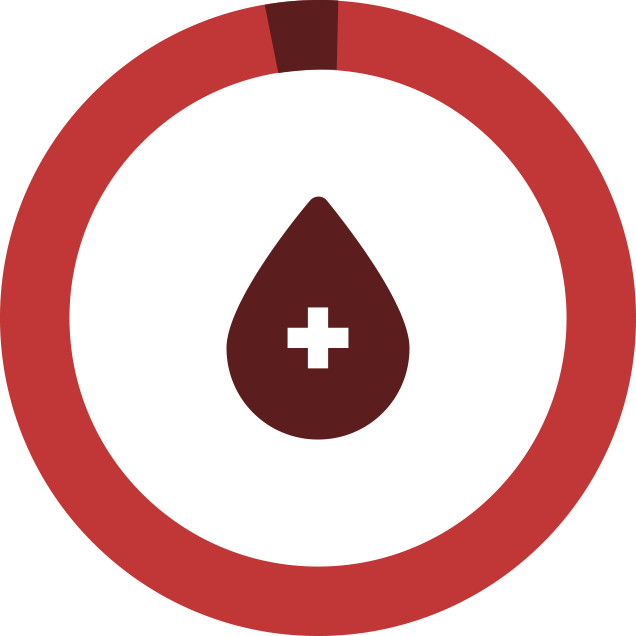
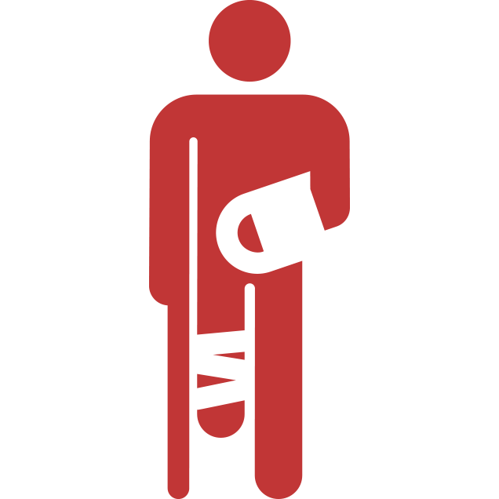

No Brasil cerca de 1,8% da população doa sangue regularmente, número que de acordo com a OMS está abaixo do “ideal” que é de 3% a 5%.

O Brasil é um dos países com grande nível de acidentes, principalmente em relação ao transito e assaltos, gerando assim muitos feridos que precisaram ser submetidos a transfusões e transplantes.Uma única doação é possível salvar até quatro vidas, uma vez que o material é separado em diferentes hemocomponentes que podem ser utilizados em diversas situações clínicas.